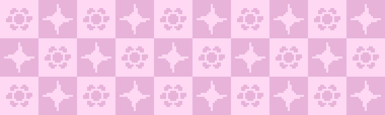
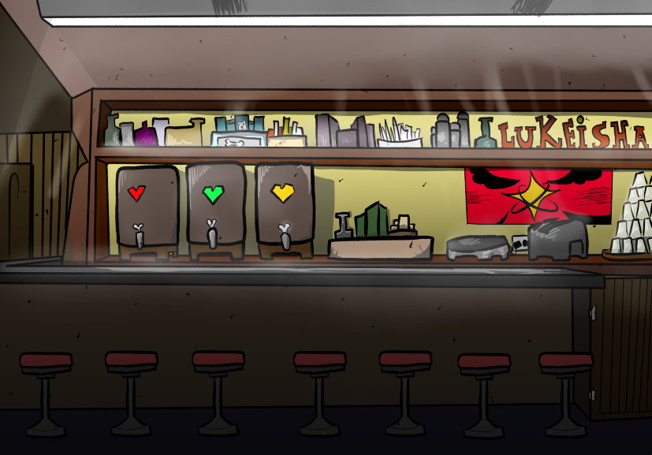
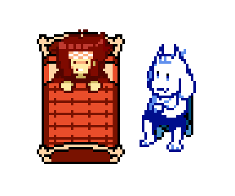

(unofficial)
NEWSLETTER
Winter 2026
Baby it's cold outside.
Yes, it seems like Spring just can’t get here
fast enough.
But at least we have one thing that keeps us
warm and fuzzy on the inside.
Something that makes a big, red, cartoon
heart jump out of our chest...
...and into a bullet board where we have to
dodge obtuse projectiles lest we face
certain death at the hands of a cute monster.
...
Just me?
No, surely someone agrees with this
sentiment! And until I find out who; this
newsletter is going nowhere!
First things first:

SPECIAL NEWSLETTER
SPOTLIGHT & INTERVIEW:
WHO YA GONNA CALL?
That's right! Exclusive interviews
with the LUKEISHA's hottest members!
If you've ever wondered what the talented content creators of today are up to, or are just too nervous to say hello yourself, then have no fear.
Art. Writing. Animation. Gamedev.
abcdefghijklmnopqrstuvwxyz123456789
These are skills that have been proven time and time again to be prominent in this community, and as an homage to the greater imaginative, we've rounded a handful of VIPs to represent this group, click the buttons below!

So many people to talk to.
So many things to see.
Did you talk to everyone?
Personally, I end up getting sick from how many people I talk to during the winter, helps fight off the seasonal depression.
Third time in 3 months I’ve gotten sick! That’s a 1:1 Ratio I think. At least when you’re sick you get to stay home playing games and drawing all day, snuggled up in bed.
...Don’t go getting yourself sick just to get a day off because I told you that though. Seriously, if you have to then fake it. It's way better to fake a cough than to actually have one for weeks on end.
And if you *are* sick, please remember to brush your teeth and shower at least once a day. Being ill isn't an excuse to stop taking care of yourself! If anything you should be doing it more!!!
Actually, do these things regardless of your health.

VALENTINE'S DAY
That’s right, today’s Valentine’s Day!
A day of mutual and self LOVE!
LOVE.
There’s nothing in this world more important.
But where did the concept of Valentine’s Day originate? Well, it’s actually very interesting because--
What? What did you just say? It’s not Valentine’s? ... It was Valentine’s days ago?!
Whoops.
W-Well, for the Orthodox, it'll be days UNTIL Valentine's!!
That's...
Not much better, is it?
Uh, here, have 3 cards we got on sale the day after.
Share them with your loved ones and collect em’ all! And no refreshing the page to cheat!
Happy Valentine’s~ !! ♡